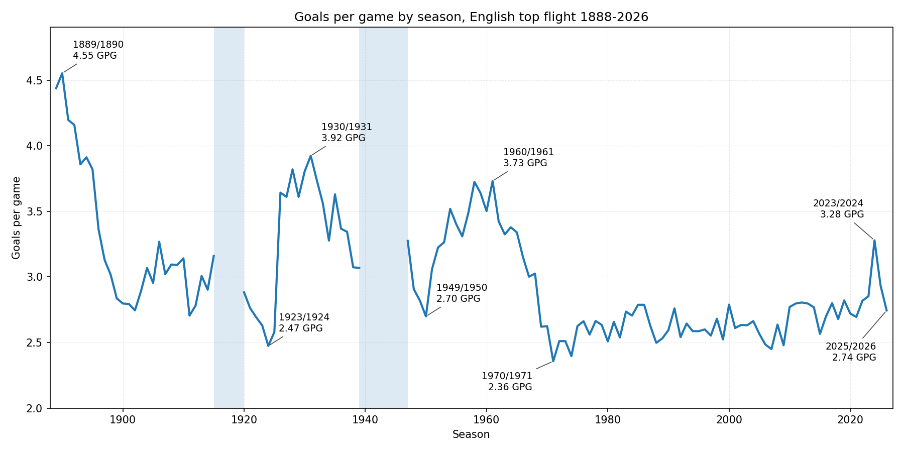
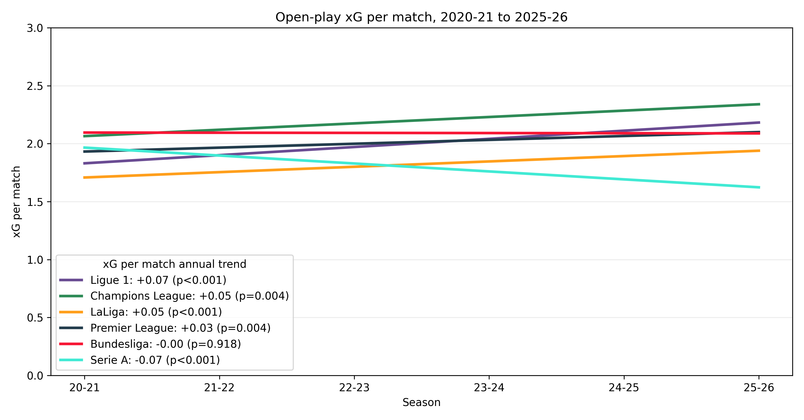
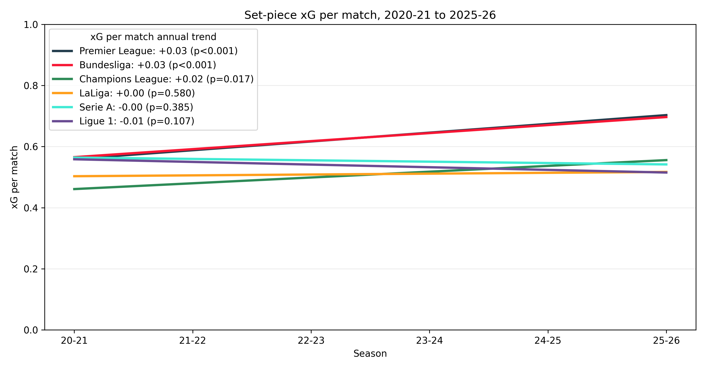
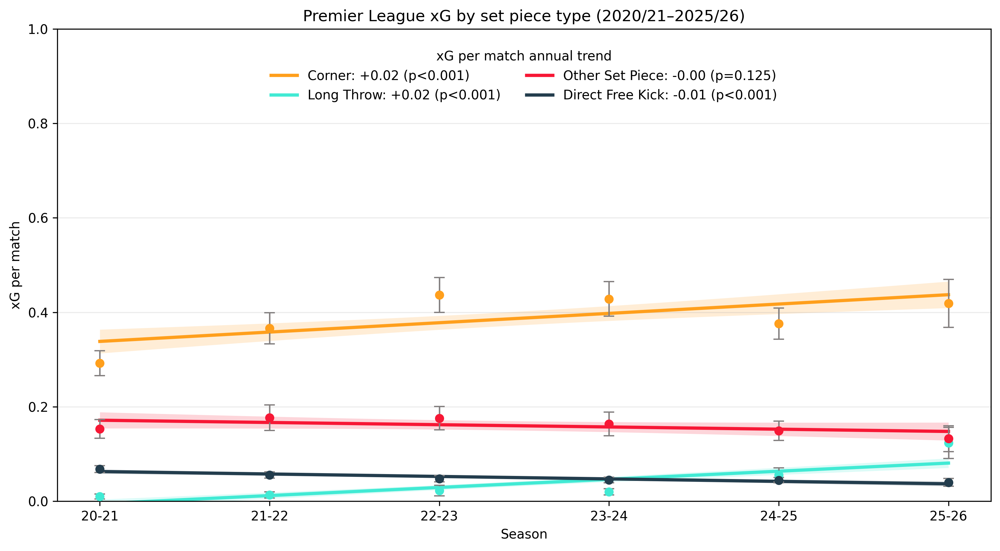

| Premier League set-piece leaders (2025–26) | ||
| Team | Set Piece Goals | Set Piece xG |
|---|---|---|
| Arsenal | 14 | 11.40 |
| Manchester United | 13 | 9.89 |
| Leeds United | 12 | 10.77 |
| Chelsea | 12 | 9.13 |
| Newcastle United | 11 | 10.58 |
| Tottenham Hotspur | 11 | 7.99 |
| AFC Bournemouth | 10 | 9.90 |
| Crystal Palace | 9 | 9.28 |
| Aston Villa | 9 | 6.57 |
| Everton | 8 | 8.75 |
| West Ham United | 8 | 7.73 |
| Sunderland | 8 | 7.19 |
| Brighton & Hove Albion | 7 | 7.23 |
| Fulham | 7 | 5.65 |
| Manchester City | 6 | 6.80 |
| Brentford | 5 | 9.12 |
| Burnley | 5 | 6.05 |
| Nottingham Forest | 5 | 4.95 |
| Wolverhampton Wanderers | 4 | 4.97 |
| Liverpool | 3 | 4.84 |
Set pieces are on the rise in football - but is this a good thing?
football
statistics
Premier League
referees
A look at recent set piece trends in England and Europe, and a rant about refereeing.
Watching English football lately it feels like there has been a set-piece explosion, with half the goals on any given weekend coming from corners or long throws. The reliance on scoring from set pieces seems like it has also removed a bit of the risk-taking from teams’ tactical approaches, resulting in a slightly duller overall product. I think this can and should be addressed, and I will have a little rant about officiating later in the article. But first, what do the statistics say about how football is changing with regard to open play and set pieces? And which teams are benefitting the most?
FotMob publishes data for open-play xG and set-piece xG as far back as the 2020-2021 season. Using this data, let’s first take a look at the open-play and set-piece xG per match for each of the last six seasons. I have added a linear regression trend line (calculated at match level, not season level) that uses the date as an independent variable, to show whether the overall trend over those seasons has been increasing or decreasing.
(I have used xG rather than goals for all analysis in this article; if you sub in goals instead, the trends are basically the same, but variance is higher).

Both open-play and set-piece xG have an overall upward trend of 0.03 per match per season, with a high level of statistical significance (low p-values). But what also jumps out is that open-play xG increased dramatically in 2023-24, and has declined in the two seasons since.
This is interesting, but before we start fishing for narratives, let’s put this in the context of the all-time goals per game by season in the English top flight.

It seems like 2023-24 was quite a big outlier. Since the early 1970s when Catenaccio and pressing nullified the free-flowing attacks of the 60s, the number of goals had been fairly stable until it suddenly shot up in 2023. Why? Without digging too deep into it, my feeling is that this season was the peak of the “play it out dangerously from the back” movement aligned with the “aggressive high press” movement. A perfect storm.
Perhaps another time I will look more closely at that season, but focusing on the current topic, I am interested to see how the Premier League’s trends for open-play and set-piece xG compare with the other major European leagues over the past six seasons.
First, let’s look at open play.

Ligue 1, the Champions League, and La Liga all had a greater upward trend than the Premier League. Meanwhile, Serie A, which had done a reasonable job of shedding its reputation for dull football, has declined at a rate of 0.07 open-play xG per season.
Now we can look at the same for set-piece xG.

Along with the Premier League, the Bundesliga has also increased its set piece output at a similar rate, and there is a bit of separation between these leagues and the others.
Where are the set-piece goals coming from?
So set pieces are on the rise in England, but which teams are benefitting the most? From casual observance, it feels like Arsenal have scored about twice as many set pieces as any other team.
That’s not quite the case, but Arsenal do lead the way with 14 goals, followed by Manchester United.
At the other end, there are multiple theories behind Liverpool’s struggles this season, but being rock bottom with only three set piece goals and 4.84 xG clearly has not helped.
In its shot data, FotMob further breaks down set pieces into four categories: corners, long throws, direct free kicks, and other set pieces. So we can also look at where the set piece increase has come from over the last six seasons.

The overall trend for both corners and long throws is the same, +0.02. But if you look closely at the dots, corners actually peaked in 2022-23 and have slightly declined since. Meanwhile, long throws were almost non-existent in 2020-21 and have gone through the roof this season. Direct free kick xG, interestingly, seems to be trending down.
Long throws are the new hot thing, but which team is leading the way? The answer probably won’t surprise you.
| Premier League long-throw leaders (2025–26) | ||
| Team | Long Throw Goals | Long Throw xG |
|---|---|---|
| Brentford | 3 | 3.30 |
| Crystal Palace | 3 | 2.92 |
| Sunderland | 3 | 2.88 |
| Burnley | 3 | 1.57 |
| Leeds United | 2 | 2.91 |
| AFC Bournemouth | 2 | 2.46 |
| Newcastle United | 2 | 2.03 |
| Everton | 2 | 1.76 |
| Manchester United | 2 | 1.70 |
| Aston Villa | 1 | 1.10 |
| Liverpool | 1 | 0.19 |
| Tottenham Hotspur | 0 | 0.95 |
| Arsenal | 0 | 0.81 |
| Nottingham Forest | 0 | 0.59 |
| Chelsea | 0 | 0.50 |
| Wolverhampton Wanderers | 0 | 0.41 |
| Fulham | 0 | 0.41 |
| West Ham United | 0 | 0.25 |
| Brighton & Hove Albion | 0 | 0.24 |
| Manchester City | 0 | 0.06 |
Brentford, pioneers of the set piece movement and with former set piece coach Keith Andrews now as their manager, lead the way with three goals and 3.3 xG from long throws. It is notable that most of the teams near the top of the list are among the smaller clubs in the division, suggesting that long throws are a bit of a leveller.
Finally, I was interested to see how English teams are performing in Europe with regard to open play and set pieces. The general narrative is that the Premier League is packed with physical beasts playing hurly burly in the penalty area each week, and the poor little technically-gifted Europeans aren’t able to deal with it.
How does that tally with the stats? Let’s look at how open-play and set-piece xG have changed in UEFA competitions in games between English teams and non-English opposition.

You will notice that the error bars are a bit larger in this plot; it’s obviously a much smaller sample than the league matches.
Nonetheless, there is a significant increase in set-piece xG for the English teams of 0.02 per match per season. Again, look more closely at the dots and we can see a large change in the current season: set-piece xG has increased, while open-play xG both for and against has decreased.
A rant about referees and applying the laws of the game
That fits the overall sense of the recent English shift towards more cautious football with an emphasis on set pieces. Everyone will have their own opinion on this. Personally, I think if you want to watch players wrestling and blocking each other while they wait for someone to launch a ball at them, there are other sports where you can enjoy that. And tellingly, those sports tend to use an egg-shaped ball to add even more fun & randomness to these chaotic sequences!
Football, on the other hand, with its round ball, bills itself as the “beautiful game”. And while the clash of different styles remains an important part of football, the authorities have always had the power to tinker with the rules (or the application thereof) to steer the game in a desired direction. Hence you can no longer just kick the shit out of the opposition’s star player.
Something that has become evident over the past few seasons is that referees have decided to allow players to obstruct the goalkeeper. In fact it is now de rigueur to assign one player at every corner whose sole job is to block the keeper from being able to come out and challenge for the ball.
Why allow this to happen? I suppose the simple logic is that set piece goals are nonetheless goals, and more goals = more entertainment? But sometimes changes have unintended consequences, and if managers realise they can rely a bit more on these set piece goals and a bit less on attacking from open play, then the overall product suffers.
The good news is, we don’t need to scratch our heads to find a solution here. The FA can simply issue an edict instructing referees to actually apply the obstruction law.
IMPEDING THE PROGRESS OF AN OPPONENT WITHOUT CONTACT
Impeding the progress of an opponent means moving into the opponent’s path to obstruct, block, slow down or force a change of direction when the ball is not within playing distance of either player.
All players have a right to their position on the field of play; being in the way of an opponent is not the same as moving into the way of an opponent.
Based on that law, is it an offence for an attacking player to block the goalkeeper at a corner? Clearly, the ball is not within playing distance and the goalkeeper’s progress is being impeded - he wants to come out and claim the ball but he is obstructed, blocked, slowed down, forced to change direction, or all of the above.
So the crux of the matter seems to be the “all players have a right to their position on the field of play” clause. This is the loophole being exploited. The “I’ve got to stand somewhere!” excuse.
But who is really buying this? The player is there solely to obstruct the goalkeeper. I know it, you know it, the referee knows it. And by and large, the player does move into the way of the keeper anyway, just before the corner is struck so as to minimize his ability to navigate around the blocker.
Furthermore, importantly, the above law applies without contact! Deliberately blocking off the keeper should be an infringement even if you don’t touch him - yet they are allowing players to pin the keeper on his line with a load of contact thrown into the bargain.
I recommend this article from last year by Profspur for a more broad, eloquent argument on this topic. Personally, I find it baffling and frustrating, and I assume there will be a growing discontent over set pieces - not least over the time spent with the ball out of play while they are setting them up like something from an NFL playbook. In the meantime, I can pull my hair out each week while the experts in the studio tell us the keeper “just needs to be stronger”.
© 2026 John Knight. All rights reserved.